第 6 讲：游戏引擎中的渲染——大地形、天空与云
用高度场、LOD 与材质混合渲染大地形，用大气散射与体积云渲染天空，解决 3A 开放世界的规模与真实感问题。
◆ 学完这一讲，你应该能
学完能解释高度场（Heightfield）表示地形的基本原理，以及为什么它无法表达洞穴等非高度场结构。
学完能说明自适应网格细分（Adaptive Mesh Tessellation）的两条优化黄金法则，并区分三角形细分与四叉树细分的优缺点。
学完能描述纹理泼溅（Texture Splatting）从简单混合到高度图混合、偏置混合的演进，并理解虚拟纹理（Virtual Texture）解决什么问题。
学完能解释大气散射中瑞利散射与米氏散射的区别，以及单次散射与多次散射在预计算 LUT 中的处理方式。
学完能说明体积云建模的基本流程：天气纹理、噪声函数、密度模型与光线步进渲染。
学完能在 UE/Unity 中找到与地形、天空、云对应的功能模块，并知道关键参数的作用。
核心结论速记
大地形用高度场（Heightfield）表示：一张二维高度图 + 网格，但高度场无法表达洞穴、悬崖等非单值高度结构。
自适应细分是地形渲染的核心优化：根据视点距离与屏幕误差动态调整网格密度，两条黄金法则是视点相关误差界和与地面真值比较。
四叉树细分易于管理和剔除，但网格灵活性差且需要处理 T-Junction；三角形细分更灵活但管理复杂。
纹理泼溅用混合图（Splat Map）混合多种材质，简单混合会显得不自然，高度图混合和偏置混合能改善过渡。
虚拟纹理（Virtual Texture）按需加载地形材质块，解决超大世界泼溅图显存爆炸的问题。
大气散射中，瑞利散射由小分子引起、短波长散射更强（天空蓝），米氏散射由气溶胶引起、各波长均匀且前向性强（太阳光晕、雾）。
预计算大气散射把透射率、单次散射、多次散射存成 LUT，但预计算成本高且难以动态调整；生产级方案通过简化多次散射和固定视点来加速。
体积云用 3D 噪声密度场 + 光线步进渲染，支持动态天气，但性能开销大，需要大步进 + 密集步进的优化策略。
011. 为什么大地形不能直接用网格 + 材质堆出来
开放世界游戏（如《荒野大镖客 2》《微软模拟飞行》）的地形有巨大的地理尺度、丰富的地貌（植被、河流、起伏山峰、高山积雪），如果直接用传统的「网格 + 材质」逐三角形建模，数据量和制作成本都不可接受。
游戏引擎的解决思路是用高度场（Heightfield）表示地形：把地形看作一个二维网格，每个格子存一个高度值，渲染时根据高度图生成网格。这就像一张灰度图，亮度代表海拔。高度场的好处是数据量小、易于 LOD、易于编辑；缺点是无法表达非单值高度的结构，比如洞穴、悬崖下的凹陷、悬垂的岩石。
课件中展示了卫星影像和等高线图，说明高度场与真实地理数据的对应关系。对于需要洞穴的场景，引擎通常用「在高度场上挖洞」的技巧：把顶点位置输出为 NaN 来剔除一个 quad，或者切换到体素（Voxel）表示。
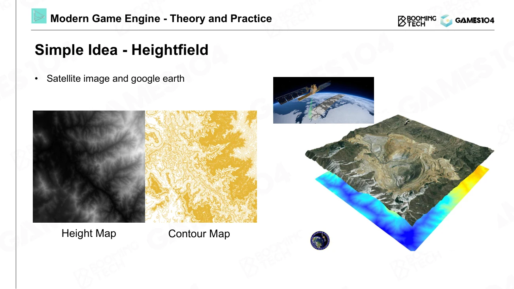
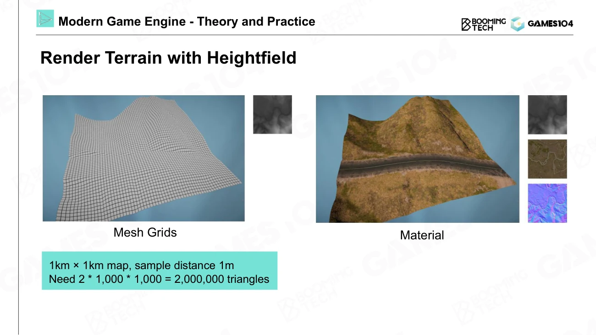
常见坑
把高度场当成万能地形 → 无法做洞穴和悬垂 → 需要局部改用体素或挖洞技巧（输出 NaN 顶点）。
高度图分辨率与网格分辨率不匹配 → 地形细节丢失或锯齿 → 确保采样间距与高度图精度一致。
UE / Unity 落地
UE：Landscape 系统就是高度场，支持导入高度图、分层材质（Landscape Material）和 LOD。
Unity：Terrain 组件使用高度图，支持 Terrain Toolkit 和可编程材质。
022. 自适应细分：让远处的三角形少、近处的三角形多
如果整个地形都用 1m 精度的网格，三角形数量会爆炸。自适应网格细分（Adaptive Mesh Tessellation） 的核心思想是：根据视点距离和屏幕误差动态调整网格密度，近处密、远处疏。
课件给出两条优化黄金法则：
- 视点相关误差界（View-dependent error bound）：误差要相对于相机距离和视场角（FoV）来度量，远处的大误差在屏幕上可能只占几个像素。
- 与地面真值比较（Error compare to ground truth）：预计算每个区域的参考误差，运行时比较当前 LOD 与真值的差异，决定是否细分。
常见的细分结构有两种：
- 基于三角形的细分（Triangle-Based Subdivision）：用二叉树不断剖分三角形，灵活但会产生 T-Junction（T 形接缝），需要额外处理。
- 基于四叉树的细分（QuadTree-Based Subdivision）：把地形切成四叉树节点，管理简单、易于剔除和数据流送，但网格灵活性差，且叶子节点网格层级需要一致，也会产生 T-Junction，需要用缝合（Stitching）解决。
课件还提到在 GPU 上做三角形细分（SIGGRAPH 2021 的 Concurrent Binary Trees），以及硬件曲面细分（Hull/Tessellator/Domain Shader）和 Mesh Shader 管线。
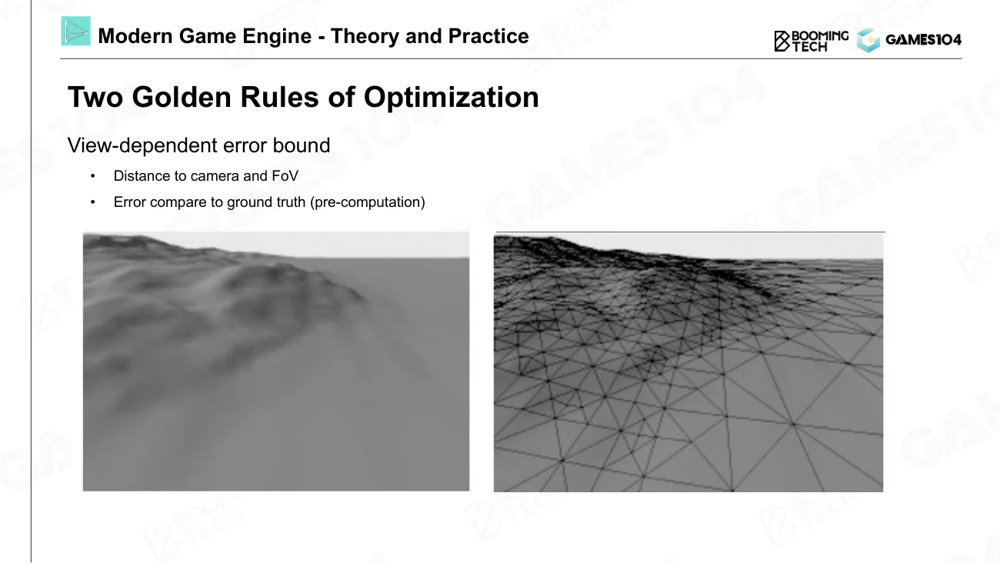
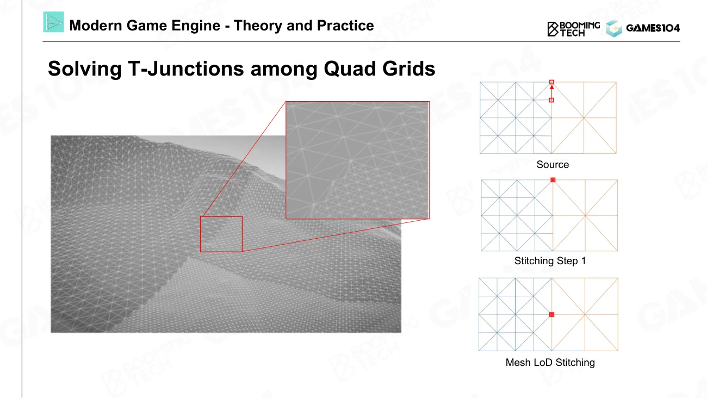
常见坑
不同 LOD 层级直接拼接 → 出现 T-Junction 裂缝 → 使用缝合（Stitching）或裙边（Skirt）技术。
误差界只按距离计算，忽略 FoV → 广角镜头下远处误差被低估 → 误差公式中引入 FoV 因子。
四叉树叶子节点层级不一致 → 网格裂缝 → 强制相邻节点层级差不超过 1，或运行时缝合。
UE / Unity 落地
UE：Landscape 的 LOD 系统基于四叉树，可在 Landscape 设置中调整 LOD 距离和分布。
Unity：Terrain 的 Pixel Error 参数控制细分误差界，值越小越精细。
033. 地形材质：从简单泼溅到虚拟纹理
地形需要混合多种材质（草地、岩石、雪、泥土）。纹理泼溅（Texture Splatting） 用一张混合图（Splat Map）的每个通道控制一种材质的权重，在着色器里按权重混合。
简单混合（Simple Blending）是线性插值，过渡平滑但显得不自然，因为现实中材质边界往往有高度差。改进方案：
- 高度图混合（Height Maps）：为每种材质额外提供高度图，混合时比较高度，让高的材质覆盖低的材质。课件给出一个简单版本：
return height1 > height2 ? texture1.rgb : texture2.rgb;，但这样会有硬边。 - 偏置混合（Biased Blending）：在高度比较中加入偏置深度，使过渡更自然。课件中的
blend函数用depth参数控制过渡宽度，计算ma = max(texture1.a + height1, texture2.a + height2) - depth，再分别计算b1、b2权重。
当材质种类很多时，采样次数会急剧增加，性能下降；而且超大世界的泼溅图会占用大量显存。虚拟纹理（Virtual Texture） 把地形材质预烘焙成瓦片（Tile），根据视点 LOD 只加载可见区域的瓦片，用虚拟索引纹理寻址。课件还提到 DirectStorage 和 DMA 用于加速磁盘到显存的传输。
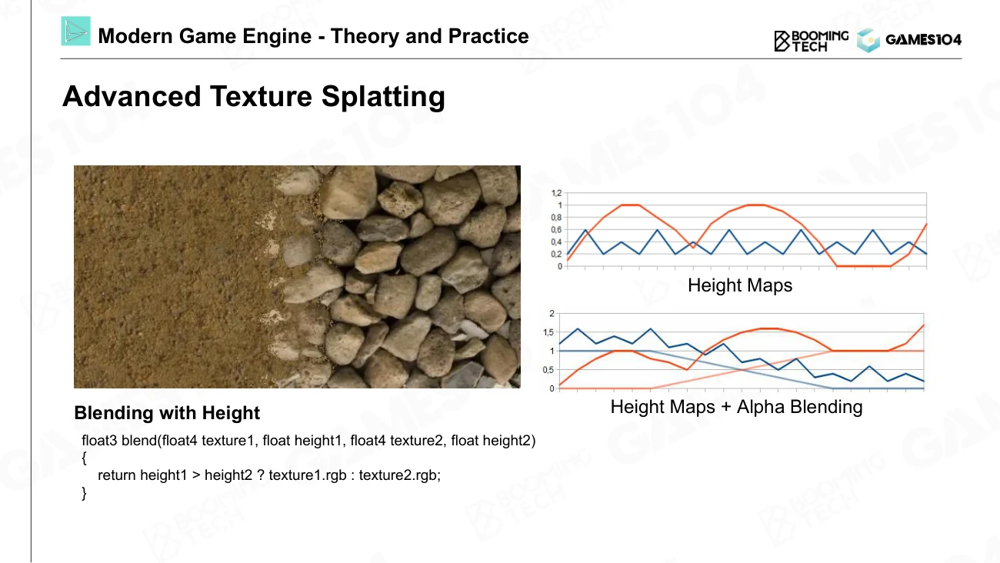
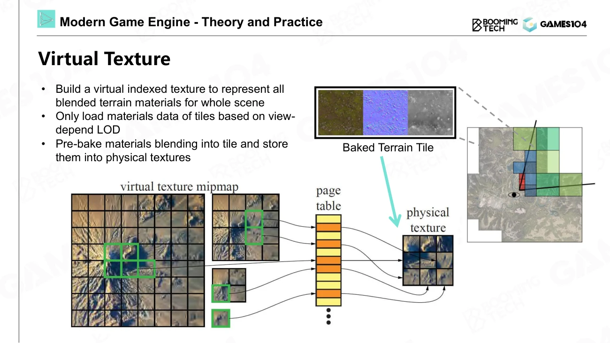
常见坑
混合图通道数不够 → 材质种类受限 → 使用多张混合图或虚拟纹理。
高度混合直接比较高度 → 边界硬切 → 加入偏置深度或平滑过渡。
泼溅图分辨率过高 → 显存爆炸 → 使用虚拟纹理按需加载。
UE / Unity 落地
UE：Landscape 材质支持 Layer Blend 节点，可设置 Height Blend 和 Alpha Blend。
Unity：Terrain 的 Terrain Layers 支持多材质混合，但默认是简单混合，需要自定义着色器实现高度混合。
高度图混合的简化着色器代码（hlsl）
float3 blend(float4 texture1, float height1, float4 texture2, float height2) {
return height1 > height2 ? texture1.rgb : texture2.rgb;
}044. 天空与大气：用物理散射模型渲染真实天空
天空的颜色来自大气散射。课件把大气看作参与介质（Participating Media）：充满粒子的体积，光与粒子发生吸收（Absorption）和散射（Scattering）。描述这一过程的方程是辐射传输方程（RTE）和体积渲染方程（VRE）。
两种主要散射：
- 瑞利散射（Rayleigh Scattering）：粒子直径远小于波长（如空气分子 N2、O2），短波长（蓝光）散射更强，且前后对称。这解释了天空为什么是蓝的。
- 米氏散射（Mie Scattering）：粒子直径与波长相当或更大（如气溶胶、灰尘），各波长散射几乎均匀，且前向性很强（g>0 时向前散射），产生太阳光晕和雾的效果。
实际渲染时，单次散射积分用光线步进（Ray Marching） 计算，结果存到查找表（LUT）。课件介绍了 Precomputed Atmospheric Scattering 方案：透射率 LUT、单次散射 LUT、多次散射 LUT。但预计算成本高，且难以动态调整天气。生产级方案（如《荒野大镖客 2》）简化多次散射假设、固定视点，生成 3D LUT 来加速，并支持从移动端到高端 PC 的伸缩。
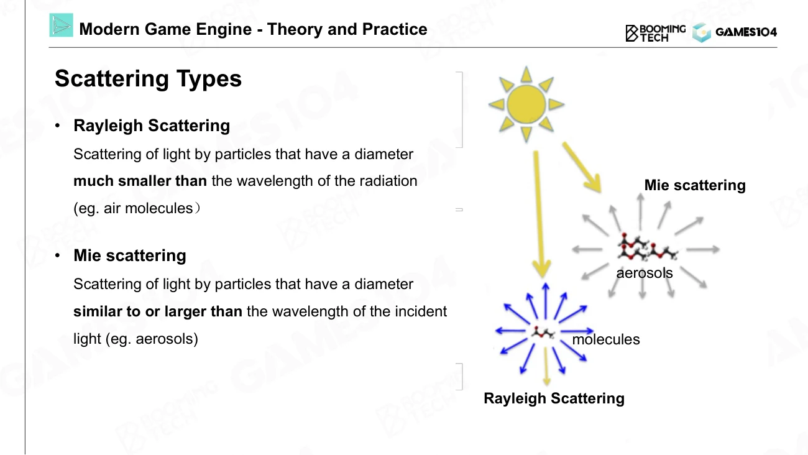
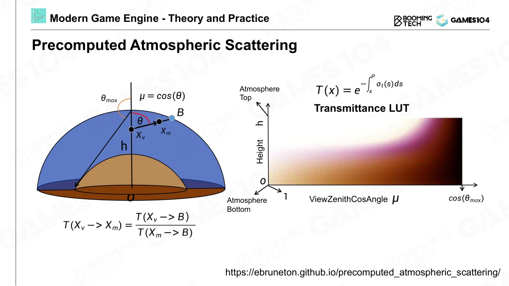
常见坑
把天空盒当成静态贴图 → 无法表现昼夜变化和天气 → 使用大气散射模型或动态天空系统。
忽略多次散射 → 天空过暗或颜色偏差 → 加入多次散射近似或 LUT。
米氏散射的 g 参数设置不当 → 太阳光晕过大或过小 → 根据气溶胶浓度调整 g（通常 0.7~0.9）。
UE / Unity 落地
UE：SkyAtmosphere 组件基于物理大气散射，支持动态昼夜；SkyLight 可捕获天空光照。
Unity：HDRP 的 Physically Based Sky 基于类似模型，URP 可用 Skybox 或自定义着色器。
055. 体积云：用噪声密度场和光线步进渲染云
云的建模有三种方式：
- 网格建模（Mesh-Based）：质量高但开销大，不支持动态天气。
- 公告板（Billboard）：效率高但视觉效果有限，云类型少。
- 体积云建模（Volumetric Cloud Modeling）：用 3D 密度场表示云，支持真实形状、大尺度云和动态天气，但需要仔细优化性能。
体积云的密度模型通常由天气纹理（Weather Texture） 和噪声函数（Noise Functions） 组合而成。课件提到 Perlin 噪声和 Worley 噪声：Perlin 噪声用于生成连续的基本形状，Worley 噪声用于生成云朵的细节。密度模型把低分辨率的 Perlin-Worley 噪声和分层 Worley 噪声结合，得到云的密度分布。
渲染时用光线步进（Ray Marching）：对每个屏幕像素发射光线，先大步进直到碰到云，再在云内部密集采样，最后收集太阳散射的光照。课件给出了四步流程：投射光线、大步进、密集采样、收集太阳散射。
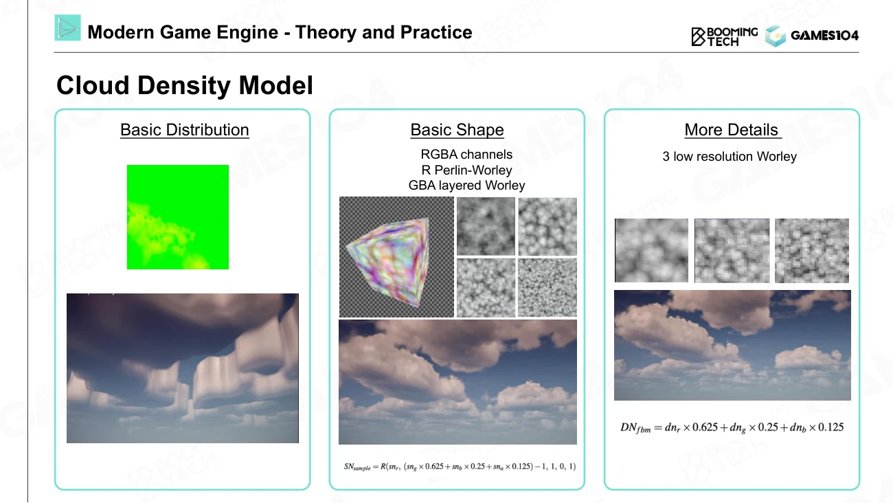
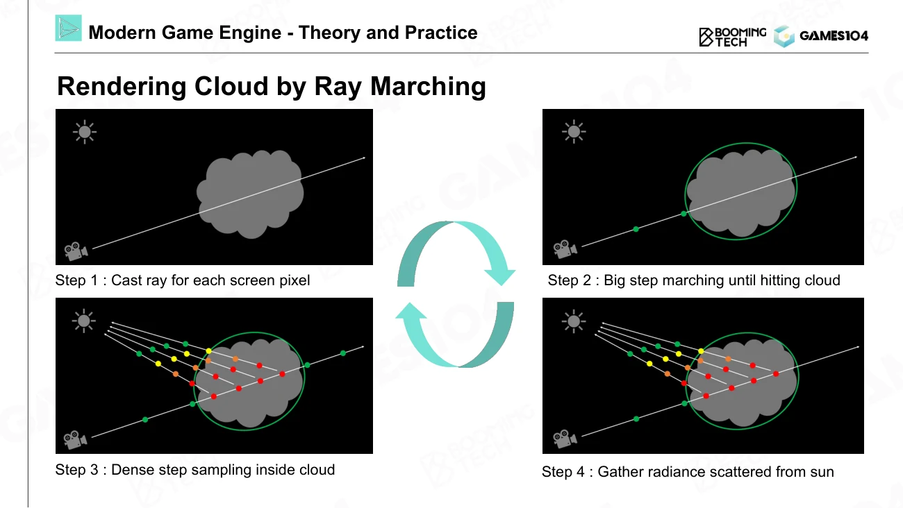
常见坑
光线步进步长过大 → 云出现条带或漏光 → 使用自适应步长，云内密集采样。
噪声频率设置不当 → 云形状不自然 → 调整 Perlin 和 Worley 噪声的频率与权重。
忽略多次散射 → 云过暗 → 在光照积分中加入多次散射近似。
UE / Unity 落地
UE：Volumetric Cloud 组件使用类似的光线步进和噪声密度模型，可在材质中调整参数。
Unity：HDRP 的 Volumetric Clouds 基于类似原理，支持天气纹理和密度控制。
066. 其他地形相关技术：非高度场地形、浮点精度与道路贴花
除了高度场，课件还提到几种扩展技术：
- 非高度场地形（Non-Heightfield Terrain）：用体素（Voxel）表示地形，通过 Marching Cubes 算法提取等值面，支持洞穴和悬垂。Marching Cubes 用查找表把每个体素立方体的 8 个顶点状态映射为三角形。Transvoxel 算法进一步解决不同 LOD 体素之间的过渡。
- 浮点精度问题（Floating-point Precision Error）：当相机和物体距离原点很远时（如 1000km），float 精度不足会导致抖动。解决方案是相机相对渲染（Camera-Relative Rendering）：把所有物体平移到相机为原点的空间，再渲染。
- 道路与贴花（Road and Decals）：用样条（Spline）编辑道路，把道路和贴花烘焙到虚拟纹理中，避免几何体穿插。
这些技术共同支撑了 3A 开放世界的庞大场景。
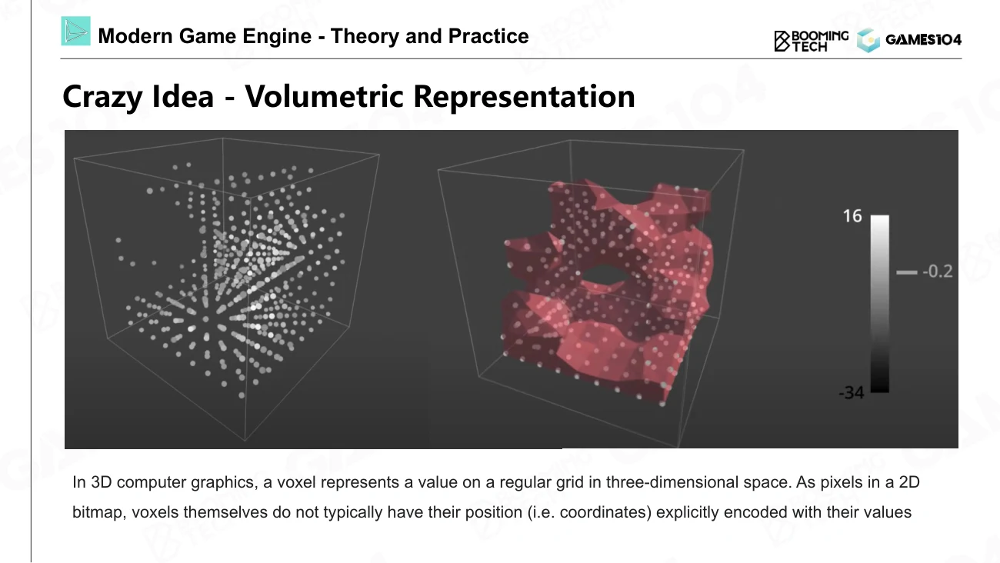
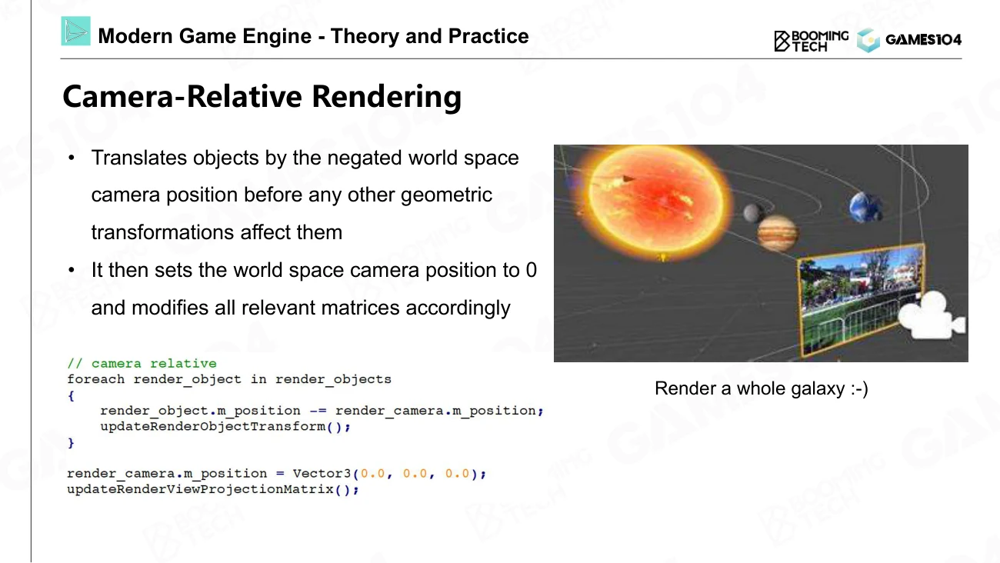
常见坑
大世界坐标直接用 float → 远处物体抖动 → 使用相机相对渲染或双精度。
体素地形直接用 Marching Cubes 不处理 LOD 过渡 → 接缝裂缝 → 使用 Transvoxel 算法。
道路贴花直接贴在地形上 → 穿插或闪烁 → 烘焙到虚拟纹理或使用贴花系统。
UE / Unity 落地
UE：World Partition 和 Large World Coordinates 支持大世界；Decal 组件可投射贴花。
Unity：HDRP 支持 Decal Projector；DOTS 支持大世界坐标。
引擎对照表
| 概念 / 效果 | Unreal Engine | Unity |
|---|---|---|
高度场地形 | Landscape 组件，导入高度图，分层材质 | Terrain 组件，高度图，Terrain Layers |
地形 LOD | Landscape LOD 设置，基于四叉树 | Terrain Pixel Error 参数 |
地形材质混合 | Landscape Layer Blend 节点，支持 Height Blend | Terrain Layers，默认简单混合，可自定义着色器 |
天空大气 | SkyAtmosphere 组件，SkyLight | HDRP Physically Based Sky |
体积云 | Volumetric Cloud 组件 | HDRP Volumetric Clouds |
虚拟纹理 | Virtual Texture 支持（Runtime Virtual Texture） | 无内置，需自定义或使用插件 |
术语双语表
| English | 中文 | 说明 |
|---|---|---|
| Heightfield | 高度场 | 用二维高度图表示地形的方法，无法表达非单值高度结构。 |
| Adaptive Mesh Tessellation | 自适应网格细分 | 根据视点距离和误差动态调整网格密度。 |
| T-Junction | T 形接缝 | 不同 LOD 网格拼接时出现的裂缝，需要缝合处理。 |
| Texture Splatting | 纹理泼溅 | 用混合图权重混合多种地形材质的技术。 |
| Virtual Texture | 虚拟纹理 | 按需加载纹理瓦片，解决超大世界显存问题。 |
| Rayleigh Scattering | 瑞利散射 | 小分子引起的散射，短波长更强，天空呈蓝色。 |
| Mie Scattering | 米氏散射 | 气溶胶引起的散射，各波长均匀，前向性强。 |
| LUT | 查找表 | 预计算并存储的表格，用于加速渲染计算。 |
| Volumetric Cloud | 体积云 | 用 3D 密度场和光线步进渲染的云。 |
| Marching Cubes | 移动立方体 | 从体素密度场提取等值面三角形的算法。 |
课后练习
01 解释高度场地形为什么无法表达洞穴，并给出一种在高度场上实现洞穴的工程技巧。
查看答案
提示：
从高度场的定义出发，思考每个二维位置只能有一个高度值。
高度场每个二维位置只有一个高度值，因此无法表示同一位置有多个表面的洞穴。工程技巧：在需要挖洞的地方把顶点位置输出为 NaN 来剔除 quad，或者局部改用体素表示。
02 四叉树细分和三角形细分各有什么优缺点？分别适合什么场景？
查看答案
提示：
从管理复杂度、网格灵活性、T-Junction 处理等方面比较。
四叉树细分：易于构建和管理，便于剔除和数据流送，但网格灵活性差，叶子节点层级需一致，需要缝合处理 T-Junction。适合大规模地形和需要高效剔除的场景。三角形细分：网格更灵活，能更好地贴合地形特征，但管理复杂，T-Junction 处理更麻烦。适合对网格质量要求高的场景。
03 瑞利散射和米氏散射的主要区别是什么？分别解释天空为什么是蓝色、太阳为什么有光晕。
查看答案
提示：
从粒子尺寸、波长依赖性和方向性三个方面回答。
瑞利散射由远小于波长的粒子（空气分子）引起，散射强度与波长四次方成反比，短波长（蓝光）散射更强，且前后对称，所以天空呈蓝色。米氏散射由与波长相当或更大的粒子（气溶胶）引起，各波长散射几乎均匀，且前向性很强，所以太阳周围出现光晕，雾天能见度降低。
04 体积云渲染中，光线步进为什么要分大步进和密集步进两步？
查看答案
提示：
考虑性能和精度的平衡。
大步进用于快速跳过没有云的空间，减少不必要的采样；密集步进只在云内部进行，以保证云细节和光照积分的精度。这样在保证视觉效果的同时优化性能。
05 在 UE 中如何实现地形材质的高度混合？简述操作步骤。
查看答案
提示：
使用 Landscape Layer Blend 节点。
在 Landscape 材质中，使用 Landscape Layer Blend 节点，为每个 Layer 添加 Height 输入，并设置 Blend Type 为 Height Blend，调整 Height Ratio 参数控制过渡宽度。